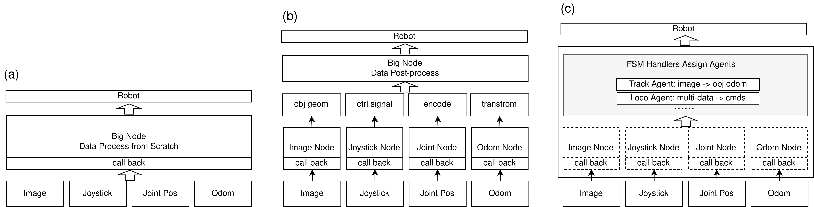

ROS Base Project
ROS Base 是一个面向复杂机器人应用的 ROS2 Python 框架。其核心目标不是“再包装一层 ROS”，而是将复杂项目中最容易失控的若干工程问题收敛为固定结构：
- 如何把通信、算法、状态机、生命周期拆开。
- 如何在一个主进程里共享上下文，又不把代码写成一个巨型 Node。
- 如何在需要时把高负载模块拆到独立进程，同时仍由主流程统一管理。
当前文档内容已按 ros_base 代码仓当前实现同步，并结合两个真实工程说明用法：
SigLoMa-VLM: 低频任务编排、VLM 调用、视觉跟踪。quad_deploy: 高频 RL 控制、硬件桥接、手柄状态机。
如果你想直接看一个完整的公开实例，可以从
SigLoMa-Code 开始。它是基于
ros_base 搭建的真实机器人系统入口，串联了训练代码、VLM 任务编排、四足机器人部署、
Kalman 滤波集成、硬件连接说明和实机部署流程。
为什么需要 ROS Base
做机器人项目时，常见会在两种极端之间反复摇摆：
所有订阅、缓存、算法和控制都放在同一个类里。
优点：
- 数据访问简单，几乎没有额外通信开销。
缺点：
- 模块边界模糊，后期维护和复用都很痛苦。
- 任何一块逻辑想单独测试，都要把整套系统拉起来。
- 状态机、回调、算法调用很容易缠在一起。
每个功能都是一个 ROS Node，通过 Topic/Service 串联。
优点：
- 物理隔离彻底，边界清楚。
缺点：
- 启动链路复杂，调试成本高。
- 进程间数据频繁序列化，图像和高频控制场景尤其吃亏。
- 跨节点握手、状态同步、资源释放都容易变复杂。
ROS Base 的折中方案
ROS Base 采用的是“单主节点 + 进程内组合 + 可选多进程外挂”的模式：

BaseManager是主进程里唯一直接继承rclpy.node.Node的核心对象。BaseNode作为通信封装层，依附在 Manager 上时复用同一个 ROS Node；独立调试时也可以单独 spin。BaseAgent负责计算逻辑，不直接持有 pub/sub。BaseHandlers负责调度、业务流程和状态机。- 对真正会拖慢主循环的模块，可以用
register_multiprocess_nodes()挂到独立进程。
快速开始
如需本地预览这份文档站点：
git clone https://github.com/11chens/ros_base_doc.git
cd ros_base_doc
pip install -r requirements.txt
mkdocs serve
在线文档入口：